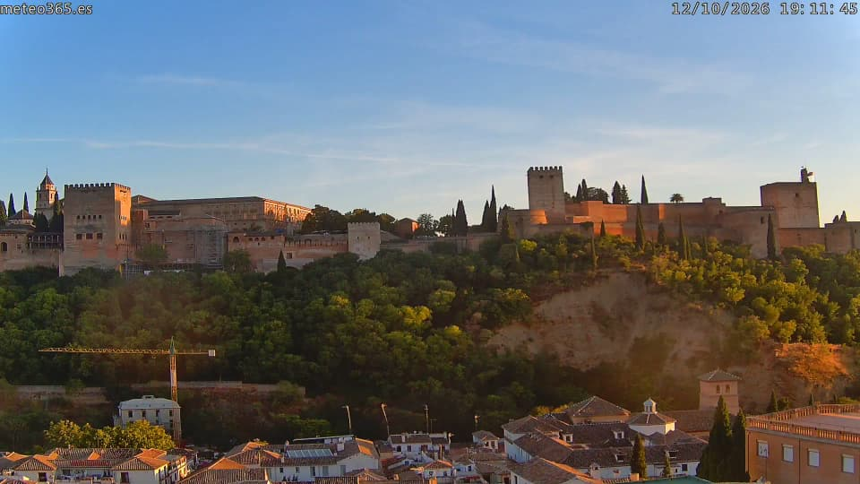
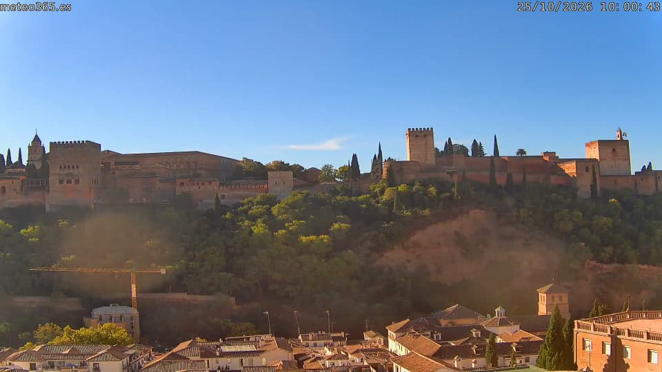
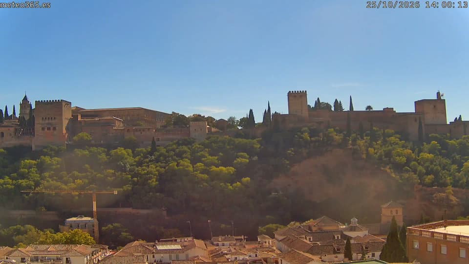

мин 11макс 29
- без осадков
- ясно, 11 ч
- воздух
Октябрь пока: по температуре как обычно, суше обычного
«Обычно» — среднее за октябри 2022–2025 годов, модель Open-Meteo. Этот месяц: камера alhambra · станция UGR Albayzín · небо и воздух Open-Meteo.


